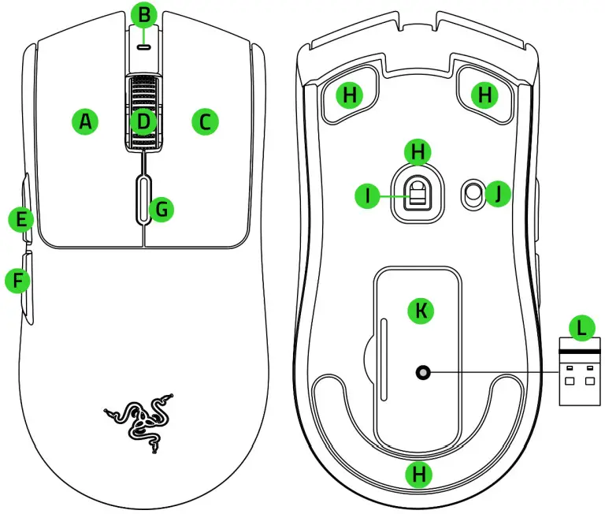
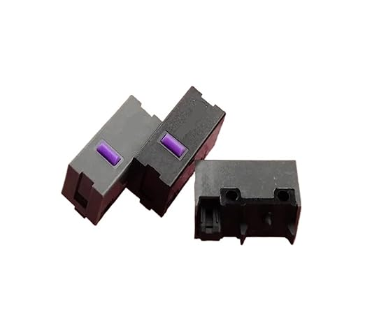
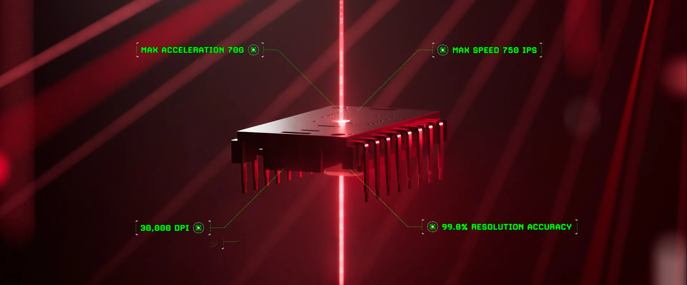
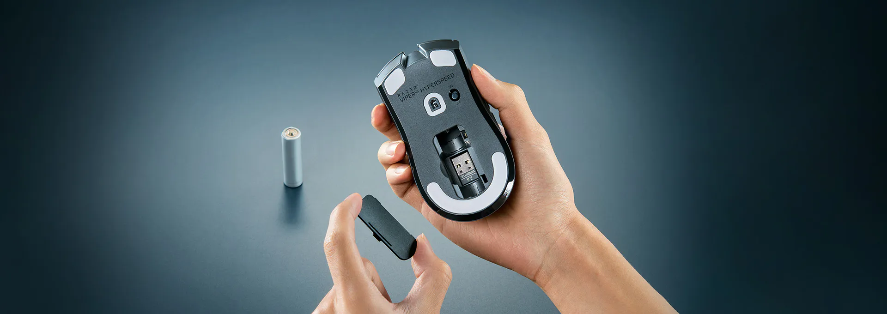
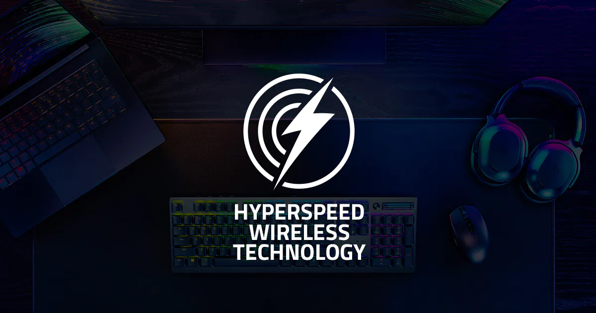
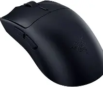

El mouse de razer lanzado al mercado en 2025, fue un gran lanzamiento aunque paso un poco desapercibido por un aspecto que le quita atractivo a muchas personas
pero que en realidad este detalle puede ser un gran punto a favor teniendo en cuenta el costo que al dia de hoy ronda los 59.99$ americanos en tiendas como
Amazon y en descuentos se puede encontrar hasta por 40$ un precio mucho mas atractivo y aunque es un poco mas que el legendario LOGITECH G305
el viper ofrece un mejor sensor, switches opticos y un agarre mas comodo para la mayoria de personas.
Detalles a Fondo
Configuracion

Esta pensado para personas diestras ya que sus botones laterales estan del lado izquierdo y no posee del lado derecho, contiene un indicador led
para saber en que perfil de dpi estamos en ese momento, y tambien se iluminara en rojo parpadeante cuando su bateria este a punto de agotarse.
Dimensiones
Las dimensiones de este mouse encajan en la mayoria de jugadores con manos de tamano regular
con sus 12.71CM(largo) x 6.39CM(ancho) x 3.99CM(alto) lo convierten un mouse
muy versatiles para la mayoria de agarres y tamano de manos.
Switches

El viper integra unos Switches Razer mecanicos de 2 gen chapados en oro, con una durabilidad prometida de hasta 60 millones de clicks, el hecho que sean mecanicos
los hace propensos a problemas de doble click o clicks fantasma cuando estos tienen tiempo de uso, en lo personal despues de un ano de tenerlo no he teniendo
ningun problema relacionado
Sensor

Con su potente y preciso FOCUS PRO de hasta 30K DPI, no habra giro brusco que le haga perder precision porque este mouse soporta una aceleracion maxima
de hasta 70g sin perder presicion, no hay ser humano que llegue a esto limites asi que puedes jugar tranquilo haciendo todos los flicks que quieras
que su presicion sera 100% real, asi que si no das una no es culpa del mouse.
Sistema de carga

Muchas personas descartan este mouse de su lista por esto que estas a punto de leer, pero es que este mouse no posee un sistema de carga ya que no posee
bateria interna, su alimentacion es con una bateria AA externa, lo que da mayor eso comparado con un mouse de bateria interna, aunque razer promete una duraccion de hasta 280h
de uso con una sola bateria, he pasado mas de un mes sin cambiarla pero no conte las horas de uso reales.
Si quieres la mayor ligeresa usa baterias AA de litio, estas son mucho mas ligeras que las alcalinas y el mouse con bateria podria rondar los 58g con una de litio
aunque las alcalinas son mas baratas si priorizas el peso usa de litio, y evita las recargables, estan tienen un peso mucho mayor y el mouse podria llegar a casi 100g
si usas una de estas, aunque son reutilizables le suben mucho peso el mouse que a mi parecer pierde sentido con un mouse inalambrico.
Conectividad

Con la tecnoligia HyperSpeed que usa una frecuencia de 2.4Ghz no tendremos ningun tipo de delay, sentiras como si usaras un mouse alambrico con la libertad que
no tiene cables, este mouse de fabrica tiene un polling rate de 1000hz pero puede llegar hasta 8k hz con un dongle que razer vende por separado.
Materiales de construccion

Su contruccion esta hecha de plastico en acabado mate en la version negra, la contruccion se siente robusta y premium al tacto, no tiene relieves o acabados para mejorar el agarre
pero el plastico del que esta hecho tiene un agarre excelente, los botones laterales sobresalen lo suficiente, ni para incomodar, ni para no encontrar donde estan, la rueda tiene
marcado su recorrido y no es dura, ni suave, esta en el punto perfecto para que no sea un problema moverla y para que no la movamos por error.
Coclusion
Recomiendo este mouse especialmente si lo encuentras por debajo de los 50$, ofrece una excelente relacion precio-beneficio en este rango de precio
aunque el hecho de que no tenga bateria interna y use switches mecanicos y no opticos le resta valor, sigue siendo una opcion solida para este 2026, especialmente
sabiendo que la version pro de este cuesta al rededor de 120$, estariamos ahorrando 60$ o mas por perder dos mejoras.
Formulario de Contacto
Estos widget son interactivos pero no guardan informacion en la pagina